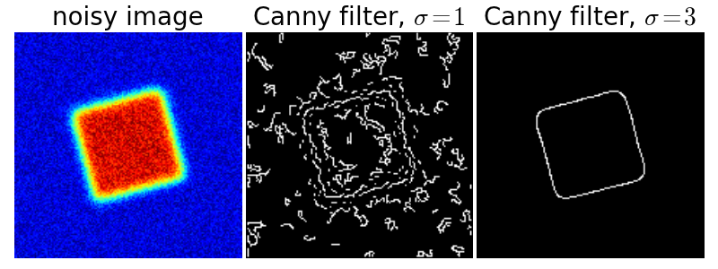

Canny edge detector¶
The Canny filter is a multi-stage edge detector. It uses a filter based on the derivative of a Gaussian in order to compute the intensity of the gradients.The Gaussian reduces the effect of noise present in the image. Then, potential edges are thinned down to 1-pixel curves by removing non-maximum pixels of the gradient magnitude. Finally, edge pixels are kept or removed using hysteresis thresholding on the gradient magnitude.
The Canny has three adjustable parameters: the width of the Gaussian (the noisier the image, the greater the width), and the low and high threshold for the hysteresis thresholding.
Python source code: plot_canny.py (generated using skimage 0.5)
import numpy as np
import matplotlib.pyplot as plt
from scipy import ndimage
from skimage import filter
# Generate noisy image of a square
im = np.zeros((128, 128))
im[32:-32, 32:-32] = 1
im = ndimage.rotate(im, 15, mode='constant')
im = ndimage.gaussian_filter(im, 4)
im += 0.2 * np.random.random(im.shape)
# Compute the Canny filter for two values of sigma
edges1 = filter.canny(im)
edges2 = filter.canny(im, sigma=3)
# display results
plt.figure(figsize=(8, 3))
plt.subplot(131)
plt.imshow(im, cmap=plt.cm.jet)
plt.axis('off')
plt.title('noisy image', fontsize=20)
plt.subplot(132)
plt.imshow(edges1, cmap=plt.cm.gray)
plt.axis('off')
plt.title('Canny filter, $\sigma=1$', fontsize=20)
plt.subplot(133)
plt.imshow(edges2, cmap=plt.cm.gray)
plt.axis('off')
plt.title('Canny filter, $\sigma=3$', fontsize=20)
plt.subplots_adjust(wspace=0.02, hspace=0.02, top=0.9,
bottom=0.02, left=0.02, right=0.98)
plt.show()